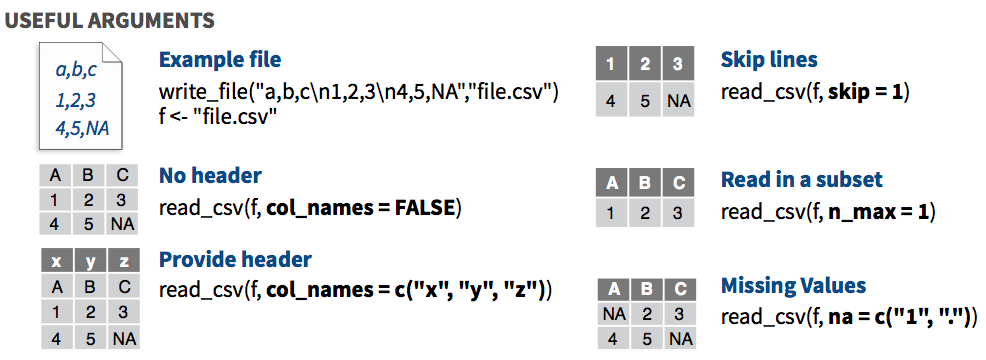
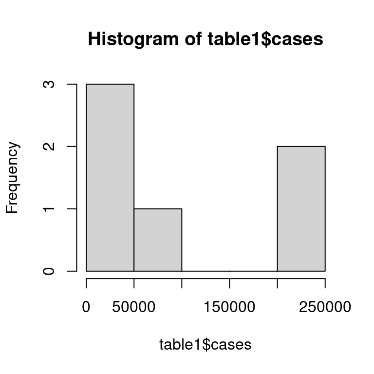
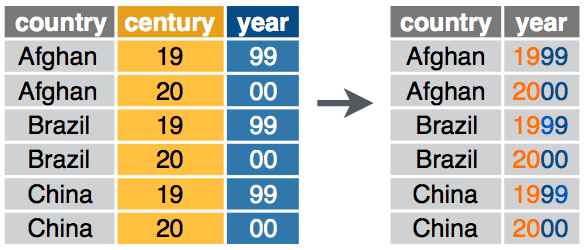
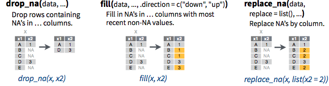
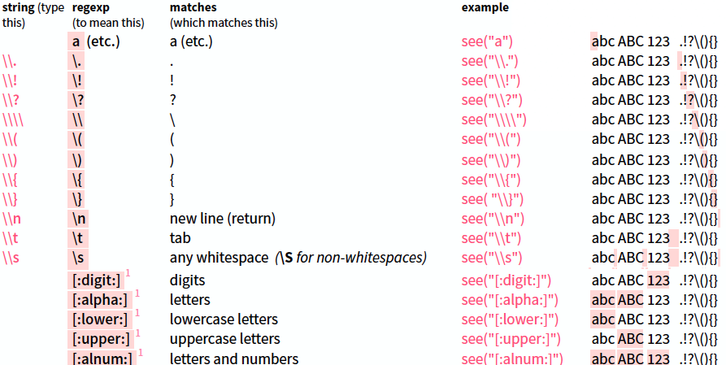

Exercises-02
Contact Info
Suja Jagannathan sujatha.jagannathan@cuanschutz.edu
Office Hours
Use https://calendly.com/molb7950 to schedule a time with a TA.
Learning Objectives for the R Bootcamp
- Follow best coding practices (class 1)
- Know the fundamentals of R programming (class 1)
- Become familiar with “tidyverse” suite of packages
- tidyr: “Tidy” a messy dataset (class 2)
- dplyr: Transform data to derive new information (class 3)
- ggplot2: Visualize and communicate results (class 4)
- Practice reproducible analysis using Rmarkdown (Rigor & Reproducibility) (classes 1-5)
Today’s class outline - class 2
- Become familiar with “tidyverse” suite of packages
- Introduce readr (Exercise 1)
- Introduce tidyr (Exercise 2)
- Tools for data exploration (Exercises 3-5)
- Review basic functions of tidyr
- pivot_wider (Exercise 6)
- pivot_longer (Exercise 7)
- separate (Exercise 8 & 9)
- unite (Exercise 10)
- handling missing values
- (if time permits) Regular expressions (regex)
- Homework instructions
Tidyverse
- Tidyverse is an opinionated collection of R packages designed for data science.
- All packages share an underlying design philosophy, grammar, and data structures.
- 25 packages, total (as of today) - we will focus mainly on tidyr, dplyr, and ggplot2
Source: R for Data Science by Hadley Wickham
Data import - readr - Exercise 1


- Let’s try importing a small dataset - Exercise # 1
getwd() # good to know which folder you are on since the path to file is relative[1] "/home/runner/work/molb-7950/molb-7950/content/bootcamp/r"# same as `pwd` in bash
mydata.tbl <- read_csv(file = "data/mydata.csv") # read in the fileNew names:
Rows: 4 Columns: 5
── Column specification
──────────────────────────────────────────────────────── Delimiter: "," chr
(2): chr, strand dbl (3): ...1, start, end
ℹ Use `spec()` to retrieve the full column specification for this data. ℹ
Specify the column types or set `show_col_types = FALSE` to quiet this message.
• `` -> `...1`mydata.tbl # look at the contents of the data object# A tibble: 4 × 5
...1 chr strand start end
<dbl> <chr> <chr> <dbl> <dbl>
1 1 chr1 - 200 250
2 2 chr1 - 4000 410
3 3 chr2 + 100 200
4 4 chr2 + 400 450d1 <- mydata.tbl # rename file
d1 # look at contents of new object# A tibble: 4 × 5
...1 chr strand start end
<dbl> <chr> <chr> <dbl> <dbl>
1 1 chr1 - 200 250
2 2 chr1 - 4000 410
3 3 chr2 + 100 200
4 4 chr2 + 400 450rm(mydata.tbl) # removing a datasetNote: All of these functions can also be used in an interactive manner via Environment > Import Dataset > From Text (readr)
What is tidy data?
“Tidy datasets are all alike but every messy dataset is messy in its own way.”
— Hadley Wickham

Datasets for today’s class - Exercise 2
In this class, we will use the datasets that come with the tidyr package to explore all the functions provided by tidyr.
Explore the contents of tidyr package (Exercise #2)
table1,table2,table3,table4a,table4b, andtable5all display the number of TB cases documented by the World Health Organization in Afghanistan, Brazil, and China between 1999 and 2000.
Getting familiar with the data - Exercise 3
R provides many functions to examine features of a data object
View()- To open the table up in an excel-like interface - not recommended for large tablesclass()- what kind of object is it (high-level)?typeof()- what is the object’s data type (low-level)?is_tibble()- use is.? to confirm data typestr()- what is the structure of the object?attributes()- does it have any metadata?Let’s explore
table1
# View(table1) # to look at the table in Viewer
table1 # to print the table to console# A tibble: 6 × 4
country year cases population
<chr> <dbl> <dbl> <dbl>
1 Afghanistan 1999 745 19987071
2 Afghanistan 2000 2666 20595360
3 Brazil 1999 37737 172006362
4 Brazil 2000 80488 174504898
5 China 1999 212258 1272915272
6 China 2000 213766 1280428583class(table1)[1] "tbl_df" "tbl" "data.frame"typeof(table1)[1] "list"is_tibble(table1)[1] TRUEstr(table1)tibble [6 × 4] (S3: tbl_df/tbl/data.frame)
$ country : chr [1:6] "Afghanistan" "Afghanistan" "Brazil" "Brazil" ...
$ year : num [1:6] 1999 2000 1999 2000 1999 ...
$ cases : num [1:6] 745 2666 37737 80488 212258 ...
$ population: num [1:6] 2.00e+07 2.06e+07 1.72e+08 1.75e+08 1.27e+09 ...attributes(table1)$class
[1] "tbl_df" "tbl" "data.frame"
$row.names
[1] 1 2 3 4 5 6
$names
[1] "country" "year" "cases" "population"Note: a tibble can be coerced into a data.frame using as.data.frame(tbl)
Getting familiar with the data - Exercise 4
Some of the useful Data Frame Functions are as follows:
- head() - shows first 6 rows
- tail() - shows last 6 rows
- dim() - returns the dimensions of data frame (i.e. number of rows and number of columns)
- nrow() - number of rows
- ncol() - number of columns
- names() or colnames() - both show the names attribute for a data frame
- sapply(dataframe, class) - shows the class of each column in the data frame*
- glimpse()
*Iteration is not covered in this bootcamp. But there is a great primer on the package that does this, purr, on Rstudio Primers. https://rstudio.cloud/learn/primers/5
More functions to explore data - table2 this time.
head(table2)# A tibble: 6 × 4
country year type count
<chr> <dbl> <chr> <dbl>
1 Afghanistan 1999 cases 745
2 Afghanistan 1999 population 19987071
3 Afghanistan 2000 cases 2666
4 Afghanistan 2000 population 20595360
5 Brazil 1999 cases 37737
6 Brazil 1999 population 172006362tail(table2)# A tibble: 6 × 4
country year type count
<chr> <dbl> <chr> <dbl>
1 Brazil 2000 cases 80488
2 Brazil 2000 population 174504898
3 China 1999 cases 212258
4 China 1999 population 1272915272
5 China 2000 cases 213766
6 China 2000 population 1280428583tail(table2, n = 8) # specify number of lines to print# A tibble: 8 × 4
country year type count
<chr> <dbl> <chr> <dbl>
1 Brazil 1999 cases 37737
2 Brazil 1999 population 172006362
3 Brazil 2000 cases 80488
4 Brazil 2000 population 174504898
5 China 1999 cases 212258
6 China 1999 population 1272915272
7 China 2000 cases 213766
8 China 2000 population 1280428583dim(table2)[1] 12 4nrow(table2)[1] 12ncol(table2)[1] 4names(table2)[1] "country" "year" "type" "count" sapply(table2, class) country year type count
"character" "numeric" "character" "numeric" class(table2) # observe the difference from the above command[1] "tbl_df" "tbl" "data.frame"glimpse(table2)Rows: 12
Columns: 4
$ country <chr> "Afghanistan", "Afghanistan", "Afghanistan", "Afghanistan", "B…
$ year <dbl> 1999, 1999, 2000, 2000, 1999, 1999, 2000, 2000, 1999, 1999, 20…
$ type <chr> "cases", "population", "cases", "population", "cases", "popula…
$ count <dbl> 745, 19987071, 2666, 20595360, 37737, 172006362, 80488, 174504…Getting familiar with the data - summary, hist, & table - Exercise 5
summary: A generic function used to produce result summaries of the results of various model fitting functions.
summary(table1) # summary of the whole table country year cases population
Length:6 Min. :1999 Min. : 745 Min. :1.999e+07
Class :character 1st Qu.:1999 1st Qu.: 11434 1st Qu.:5.845e+07
Mode :character Median :2000 Median : 59112 Median :1.733e+08
Mean :2000 Mean : 91277 Mean :4.901e+08
3rd Qu.:2000 3rd Qu.:179316 3rd Qu.:9.983e+08
Max. :2000 Max. :213766 Max. :1.280e+09 summary(table1$cases) # summary of just one column of the table Min. 1st Qu. Median Mean 3rd Qu. Max.
745 11434 59112 91277 179316 213766 hist: Takes in a vector of values and plots a histogram.
hist(table1$cases) # summary of just one column of the table
table: Uses the cross-classifying factors to build a contingency table of the counts at each combination of factor levels.
table(table2$year) # tally of one column
1999 2000
6 6 table(table2$year, table2$type) # two columns at a time
cases population
1999 3 3
2000 3 3Tidying data
The four verbs to keep in mind for reshaping data with tidyr are:
- pivot_wider
- pivot_longer
- separate
- unite
There are other verbs as well - as always, look at the tidyr cheatsheet!
pivot_wider - syntax
pivot_wider() “widens” data, increasing the number of columns and decreasing the number of rows.

pivot_wider(
data,
names_from = name,
values_from = value,
...
)pivot_wider - Exercise 6
library(tidyr)
table1 # this is a tidy dataset# A tibble: 6 × 4
country year cases population
<chr> <dbl> <dbl> <dbl>
1 Afghanistan 1999 745 19987071
2 Afghanistan 2000 2666 20595360
3 Brazil 1999 37737 172006362
4 Brazil 2000 80488 174504898
5 China 1999 212258 1272915272
6 China 2000 213766 1280428583table2 # this one is NOT tidy# A tibble: 12 × 4
country year type count
<chr> <dbl> <chr> <dbl>
1 Afghanistan 1999 cases 745
2 Afghanistan 1999 population 19987071
3 Afghanistan 2000 cases 2666
4 Afghanistan 2000 population 20595360
5 Brazil 1999 cases 37737
6 Brazil 1999 population 172006362
7 Brazil 2000 cases 80488
8 Brazil 2000 population 174504898
9 China 1999 cases 212258
10 China 1999 population 1272915272
11 China 2000 cases 213766
12 China 2000 population 1280428583pivot_wider(table2,
names_from = type,
values_from = count
)# A tibble: 6 × 4
country year cases population
<chr> <dbl> <dbl> <dbl>
1 Afghanistan 1999 745 19987071
2 Afghanistan 2000 2666 20595360
3 Brazil 1999 37737 172006362
4 Brazil 2000 80488 174504898
5 China 1999 212258 1272915272
6 China 2000 213766 1280428583# if you want to save the tidy table, you have to assign the output to a new object
table2_tidy <- pivot_wider(
table2,
names_from = type,
values_from = count
)
table2_tidy# A tibble: 6 × 4
country year cases population
<chr> <dbl> <dbl> <dbl>
1 Afghanistan 1999 745 19987071
2 Afghanistan 2000 2666 20595360
3 Brazil 1999 37737 172006362
4 Brazil 2000 80488 174504898
5 China 1999 212258 1272915272
6 China 2000 213766 1280428583pivot_longer - Syntax
pivot_longer() “lengthens” data, increasing the number of rows and decreasing the number of columns.

pivot_longer(
data,
cols,
names_to = "name",
values_to = "value",
...
)pivot_longer - Exercise 7
table4a# A tibble: 3 × 3
country `1999` `2000`
<chr> <dbl> <dbl>
1 Afghanistan 745 2666
2 Brazil 37737 80488
3 China 212258 213766pivot_longer(table4a, 2:3, names_to = "year", values_to = "cases")# A tibble: 6 × 3
country year cases
<chr> <chr> <dbl>
1 Afghanistan 1999 745
2 Afghanistan 2000 2666
3 Brazil 1999 37737
4 Brazil 2000 80488
5 China 1999 212258
6 China 2000 213766pivot_longer(table4a, -country, names_to = "year", values_to = "cases")# A tibble: 6 × 3
country year cases
<chr> <chr> <dbl>
1 Afghanistan 1999 745
2 Afghanistan 2000 2666
3 Brazil 1999 37737
4 Brazil 2000 80488
5 China 1999 212258
6 China 2000 213766table4_tidy <- pivot_longer(table4a, -country, names_to = "year", values_to = "cases")
table4_tidy# A tibble: 6 × 3
country year cases
<chr> <chr> <dbl>
1 Afghanistan 1999 745
2 Afghanistan 2000 2666
3 Brazil 1999 37737
4 Brazil 2000 80488
5 China 1999 212258
6 China 2000 213766separate - Syntax
Given either a regular expression or a vector of character positions, separate() turns a single character column into multiple columns.

separate(
data,
col,
into,
sep = "[^[:alnum:]]+", #any sequence of non-alphanumeric values
remove = TRUE, # default is to remove the original column
convert = FALSE, # default is to not convert
extra = "warn",
fill = "warn",
...
)separate - Exercise 8
table3# A tibble: 6 × 3
country year rate
<chr> <dbl> <chr>
1 Afghanistan 1999 745/19987071
2 Afghanistan 2000 2666/20595360
3 Brazil 1999 37737/172006362
4 Brazil 2000 80488/174504898
5 China 1999 212258/1272915272
6 China 2000 213766/1280428583table3_tidy_1 <- separate(table3,
rate,
into = c("cases", "population"),
sep = "/"
)
table3_tidy_1# A tibble: 6 × 4
country year cases population
<chr> <dbl> <chr> <chr>
1 Afghanistan 1999 745 19987071
2 Afghanistan 2000 2666 20595360
3 Brazil 1999 37737 172006362
4 Brazil 2000 80488 174504898
5 China 1999 212258 1272915272
6 China 2000 213766 1280428583separate_rows - Syntax
Given either a regular expression or a vector of character positions, separate() turns a single character column into multiple rows.

separate_rows(
data,
...,
sep = "[^[:alnum:].]+",
convert = FALSE)separate_rows - Exercise 9
table3# A tibble: 6 × 3
country year rate
<chr> <dbl> <chr>
1 Afghanistan 1999 745/19987071
2 Afghanistan 2000 2666/20595360
3 Brazil 1999 37737/172006362
4 Brazil 2000 80488/174504898
5 China 1999 212258/1272915272
6 China 2000 213766/1280428583table3_tidy_2 <- separate_rows(table3, rate, sep = "/")
table3_tidy_2# A tibble: 12 × 3
country year rate
<chr> <dbl> <chr>
1 Afghanistan 1999 745
2 Afghanistan 1999 19987071
3 Afghanistan 2000 2666
4 Afghanistan 2000 20595360
5 Brazil 1999 37737
6 Brazil 1999 172006362
7 Brazil 2000 80488
8 Brazil 2000 174504898
9 China 1999 212258
10 China 1999 1272915272
11 China 2000 213766
12 China 2000 1280428583This is not a great example because in creating two rows, the case and population numbers are now mixed up and we have lost information. So always think about and be intentional to avoid information loss.
unite - Syntax
unite() combines multiple columns into a single column.

unite(data,
col,
..., #select columns to unite
sep = "[^[:alnum:]]+", #any sequence of non-alphanumeric values
remove = TRUE, #default is set to TRUE
na.rm = FALSE) #default is set to FALSEunite - Exercise 10
table6 <- read_csv(file = "data/table6.csv")New names:
Rows: 3 Columns: 5
── Column specification
──────────────────────────────────────────────────────── Delimiter: "," chr
(1): country dbl (4): ...1, century, year, cases
ℹ Use `spec()` to retrieve the full column specification for this data. ℹ
Specify the column types or set `show_col_types = FALSE` to quiet this message.
• `` -> `...1`table6_tidy <- unite(table6, "new", century, year, sep = "")
table6_tidy# A tibble: 3 × 4
...1 country new cases
<dbl> <chr> <chr> <dbl>
1 1 Afganistan 1999 745
2 2 Brazil 1999 37737
3 3 China 1999 212258Handling missing values

Source: Rstudio cheatsheets
Regular expressions

Source: Rstudio cheatsheets
Useful website: Regexr
Note: stringr is an entire package focused on working with character strings. I highly recommend checking it out!
Problem Set and Grading Rubric
- Today’s problem set assignment will allow you to practice the tidyr tools we learned in class today.
- There is a total of 5 exercises, each with 4 points for a total of 20 points.
- Link to grading rubric.
Acknowledgements
The material for this class was heavily borrowed from: * Data Science with R by Garrett Grolemund: https://garrettgman.github.io/tidying/ * R for data science by Hadley Wickham: https://r4ds.had.co.nz/index.html
Further Reading & Resources
- R for data science https://r4ds.had.co.nz/index.html
- Advanced R by Hadley Wickam https://adv-r.hadley.nz/
- Data Science with R by Garrett Grolemund https://garrettgman.github.io/tidying/